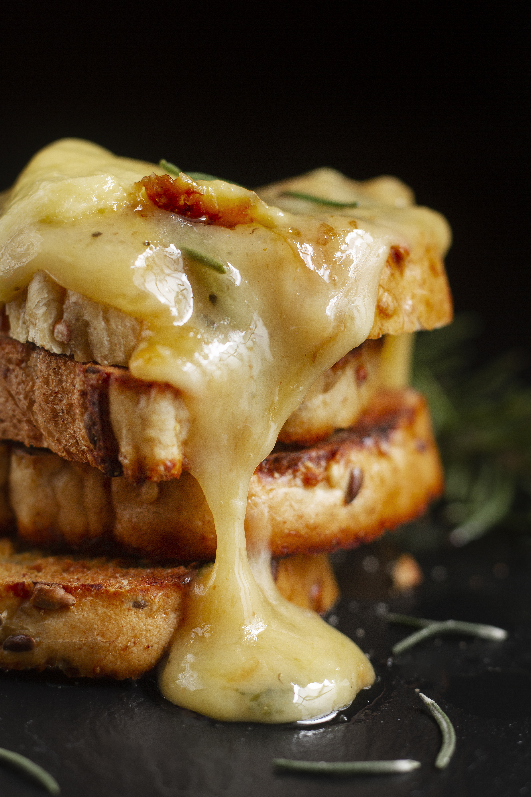

Back to Home
Million Dollar Grilled Cheese

Description
This Million dollar grilled cheese is extremely rich and savory,
with a crisp, deeply browned exterior, a molten, creamy center, and a yummy cheese crust.
Sharp Cheddar adds tang, American cheese brings stretchy melt,
and the cream cheese filling is studded with smoky bacon and fresh scallions for balance.
Ingredents
- 1/2 cup mayonnaise
- 2 cloves garlic, grated, divided
- 8 (1-ounce) slices hearty white bread
- 1 (8-ounce) package cream cheese, softened
- 1 cup thinly sliced scallions
- 3/4 cup chopped cooked bacon
- 3 cups shredded sharp Cheddar cheese, divided
- 8 (1-ounce) slices processed American cheese
Directions
- Stir together mayonnaise and 1/2 teaspoon garlic in a small bowl.
Spread 1 tablespoon of the mayonnaise mixture evenly over 1 side of each bread slice.
-
Stir together cream cheese, scallions, bacon, 1 1/2 cups Cheddar cheese, and remaining 1/2 teaspoon garlic in a bowl until well combined.
Spread mixture evenly over bare sides of 4 of the bread slices (about heaping 1/2 cup each); top evenly with American cheese, overlapping as needed to fit.
Top with remaining 4 bread slices, mayonnaise side up.
-
Sprinkle 6 tablespoons Cheddar cheese evenly on the bottom of a nonstick skillet. Place 1 assembled sandwich on top of Cheddar in the skillet.
Cook over medium-low, undisturbed, until cheese is browned and crispy on underside, 4 to 6 minutes.
Flip and cook, undisturbed, until mayonnaise side is browned, 2 to 3 minutes.
-
Transfer sandwich to a wire rack set in a large rimmed baking sheet, Cheddar-side up.
Repeat process with remaining Cheddar and sandwiches.
Slice sandwiches in half diagonally before serving.
More recipes here